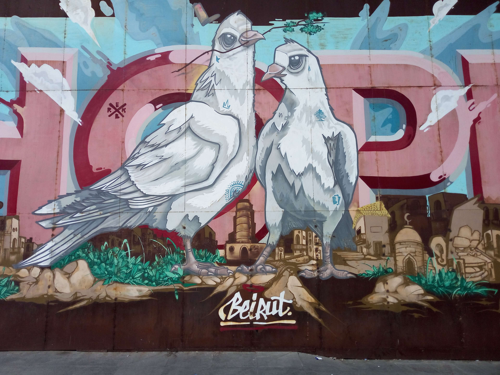

Beirut
Lebanon · Eastern Mediterranean
Beirut is a city where history, culture, and everyday life come together
along the Mediterranean coast. Known for its remarkable contrasts, the
Lebanese capital brings together historic neighbourhoods, lively streets,
traditional architecture, modern cafés, and a vibrant cultural scene.
Walking through Beirut offers glimpses of its complex past and enduring
character, with traces of different eras visible throughout the city.
From its bustling streets to its coastal atmosphere, Beirut leaves a
lasting impression through its energy, diversity, and distinctive
Mediterranean spirit.
These photographs capture my personal memories and experiences in
Beirut, preserving moments from my time exploring the city.
My Photo Gallery
Explore my personal photographs and memories from Beirut, Lebanon.
View All Photos ↗